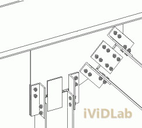
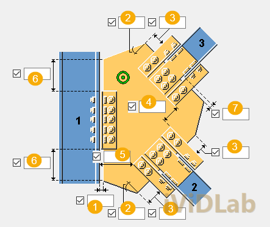

Giải pháp tăng đơ và giằng tròn: Mô hình hóa hệ giằng chịu kéo mảnhTensioners and Turnbuckles: Modeling Slender Tension Bracing Systems
Chuyên mục: Tekla StructuresCategory: Tekla Structures•Ngày đăng: 24/05/2026Published: May 24, 2026•Tác giả: iViDLab TeamAuthor: iViDLab Team
Trong các kết cấu thép nhẹ hoặc các công trình mang tính kiến trúc cao, hệ giằng thường sử dụng thép tròn trơn hoặc cáp (tension rod/cable bracing) thay vì các thép hình góc chữ V hay ống. Để đảm bảo hệ giằng luôn căng cứng, người ta sử dụng các bộ tăng đơ (turnbuckles) và chi tiết tai neo (clevis/fork end).
Bài viết này của iViDLab Team dựa trên tài liệu TS_COMP_2025_en_System components.pdf sẽ hướng dẫn cách triển khai các chi tiết giằng tròn, cáp, và phụ kiện tăng đơ trong Tekla Structures một cách chuẩn xác nhất.
1. Cấu hình chi tiết tăng đơ (Turnbuckles)
Tăng đơ là bộ phận trọng tâm của hệ giằng kéo. Khi sử dụng các component hệ thống, bạn cần chú ý đến việc thiết lập chiều dài ren, bước ren và khoảng hở an toàn (clearance) cho việc vặn tăng đơ trong thực tế thi công.
Lưu ý thi công: Luôn kiểm tra kỹ khoảng hở giữa cụm tăng đơ và các cấu kiện lân cận. Các phụ kiện như tai neo chữ U (clevis) phải tương thích đường kính chốt (pin) với bản mã (gusset plate).

Cấu hình cụm tăng đơ

Chi tiết chốt và tai neo
In lightweight steel structures or highly architectural applications, bracing systems often utilize round solid rods or cables (tension rod/cable bracing) instead of standard angle profiles. To ensure the bracing system remains in tension, turnbuckles and clevis/fork end fittings are employed.
This article by the iViDLab Team, based on TS_COMP_2025_en_System components.pdf, provides guidance on deploying tension rod/cable details and turnbuckle accessories accurately in Tekla Structures.
1. Turnbuckle Detailing Configuration
The turnbuckle is the centerpiece of a tension bracing system. When using system components, pay close attention to setting thread lengths, pitch, and safe clearance spaces required for turning the turnbuckle during actual site erection.
Erection Note: Always double-check the clearance between the turnbuckle assembly and adjacent members. Accessories like clevis forks must have their pin diameters accurately matched with the gusset plate holes.